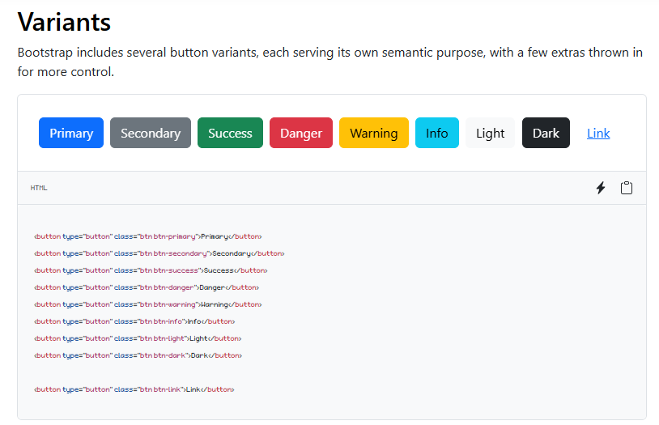
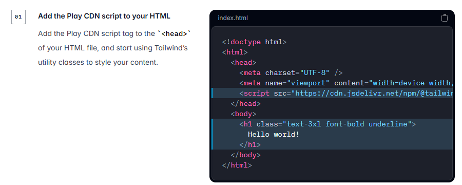

CSS: avanzato
7.1Flexbox
L’idea (contenitore ed elementi · asse principale e trasversale)
Con il flusso normale affiancare tre card, centrare un riquadro in verticale o spingere una voce di menu a destra richiede trucchi. Flexbox (flexible box) nasce per questo: dispone gli elementi in una direzione, distribuendo lo spazio in modo flessibile.
Si scrive display: flex sul contenitore (flex container). I suoi figli diretti diventano elementi flessibili (flex item) e si mettono in fila, uno accanto all’altro. I nipoti no: dentro ogni elemento continua il flusso normale, a meno di fare di quell’elemento un altro contenitore flex.
index.html<div class="corsi"> <!-- contenitore: display: flex -->
<div class="card">Arduino</div> <!-- elemento flessibile -->
<div class="card">Stampa 3D</div>
<div class="card">Robot</div>
</div>
Tutto Flexbox ragiona su due assi:
- l’asse principale (main axis) è la direzione in cui gli elementi si mettono in fila: con il valore iniziale
flex-direction: rowè orizzontale, da sinistra a destra; - l’asse trasversale (cross axis) è perpendicolare: con
rowè verticale.
Con flex-direction: column gli elementi si impilano dall’alto in basso: l’asse principale diventa verticale e quello trasversale orizzontale. Gli assi si scambiano, e con loro il significato delle proprietà di allineamento (più avanti). Esiste anche display: inline-flex: il contenitore funziona allo stesso modo, ma verso l’esterno sta in linea, largo quanto il contenuto, come un inline-block.
Errore tipico
«display: flex va messo sugli elementi che voglio affiancare.»
Va sul contenitore: sono i suoi figli diretti a mettersi in fila. Su un elemento da solo non affianca niente.
Errore tipico
«justify-content lavora sempre in orizzontale.»
justify-content lavora sull’asse principale: orizzontale con row, ma verticale con column.
Proprietà del contenitore (flex-direction · flex-wrap · justify-content · align-items · gap)
Le proprietà del contenitore decidono come si dispongono tutti gli elementi. Si provano nel widget del paragrafo precedente.
flex-direction: la direzione dell’asse principale.row(predefinito, da sinistra a destra),row-reverse(da destra a sinistra),column(dall’alto in basso),column-reverse(dal basso in alto);flex-wrap: se gli elementi non entrano. Connowrap(predefinito) restano su una riga sola e si restringono; conwrapvanno a capo su più righe.flex-flowriassume le due:flex-flow: row wrap;justify-content: come si distribuisce lo spazio libero sull’asse principale.flex-start(all’inizio),flex-end(in fondo),center,space-between(primo e ultimo ai bordi, spazi uguali tra gli altri),space-around(spazio uguale attorno a ognuno: ai bordi è la metà),space-evenly(spazi tutti uguali, anche ai bordi);align-items: come si allineano gli elementi sull’asse trasversale.stretch(predefinito: si allungano fino a riempire),flex-start,flex-end,center,baseline(allineati sulla linea di base del testo);align-content: come si distribuiscono le righe quando ce n’è più d’una (conwrap), con gli stessi valori dijustify-content;gap: lo spazio tra gli elementi (non ai bordi).row-gapecolumn-gaplo danno separatamente tra le righe e tra le colonne.
Con flex-direction: column, justify-content: center centra gli elementi in orizzontale o in verticale?
I sei valori di justify-content sullo stesso contenitore
flex-startflex-endcenterspace-betweenspace-aroundspace-evenlyErrore tipico
«flex-wrap è attivo di default: se gli elementi non entrano vanno a capo.»
Il valore predefinito è nowrap: gli elementi restano su una riga e si restringono, fino a uscire dal contenitore. Per andare a capo serve flex-wrap: wrap.
Proprietà degli elementi (flex-grow · flex-shrink · flex-basis · flex · order · align-self)
Ogni elemento flessibile ha tre proprietà che decidono la sua larghezza (con row) sull’asse principale:
flex-basis: la misura di partenza.auto(predefinito) vuol dire lawidthdell’elemento o, se non c’è, quella del contenuto;0vuol dire partire da zero;flex-grow: come l’elemento si spartisce lo spazio avanzato, quello che resta nel contenitore dopo aver messo tutti alla misura di partenza. Con0(predefinito) non cresce; con1su tutti, lo spazio avanzato si divide in parti uguali; un elemento con2ne prende il doppio;flex-shrink: come l’elemento rinuncia allo spazio mancante quando le misure di partenza non entrano. Con1(predefinito) si restringe; con0mai.
La scorciatoia flex le scrive tutte e tre, in quest’ordine. I valori da ricordare:
| Scrittura | Equivale a | Effetto |
|---|---|---|
| valore iniziale | flex: 0 1 auto | non cresce, si restringe, parte dal contenuto |
flex: 1 | flex: 1 1 0% | parte da zero e cresce: elementi larghi uguali |
flex: auto | flex: 1 1 auto | parte dal contenuto e cresce: larghi diversi |
flex: none | flex: 0 0 auto | rigido: né cresce né si restringe |
Tre box con testi di lunghezza diversa e flex-grow: 1 su tutti. Diventano larghi uguali?
Altre proprietà degli elementi:
ordercambia l’ordine in cui compaiono, senza toccare l’HTML (predefinito 0; i numeri più bassi vengono prima). Va usato con cautela: chi naviga con la tastiera o con un lettore di schermo segue l’ordine dell’HTML;align-selfcambia l’allineamento trasversale di un solo elemento, sovrascrivendo l’align-itemsdel contenitore;margin-left: auto(conrow) spinge l’elemento in fondo: il margine automatico prende tutto lo spazio libero. È il modo di mandare a destra l’ultima voce di un menu;- un elemento flessibile non si restringe sotto la larghezza del suo contenuto (la parola o l’URL più lungo): un testo lungo può uscire dal suo riquadro. La soluzione è
min-width: 0sull’elemento.
Errore tipico
«flex: 1 e flex-grow: 1 sono la stessa cosa.»
flex: 1 mette anche la base a 0: gli elementi diventano larghi uguali. flex-grow: 1 lascia la base auto: divide solo lo spazio avanzato e gli elementi restano diversi.
Errore tipico
«Un testo lungo sta sempre nel suo riquadro.»
Un elemento flessibile non scende sotto la larghezza del suo contenuto più lungo: una parola o un URL lunghissimi lo fanno sporgere. Serve min-width: 0 (e magari overflow-wrap: anywhere).
Schemi ricorrenti (centrare · barra di navigazione · card affiancate · footer in fondo)
Nei siti veri Flexbox si usa soprattutto in quattro modi, che conviene conoscere a memoria:
Quattro schemi ricorrenti
.box {
display: flex;
justify-content: center;
align-items: center;
}nav { display: flex; gap: 16px; }
.accedi { margin-left: auto; }.corsi {
display: flex;
flex-wrap: wrap;
gap: 8px;
}
.card { flex: 1 1 120px; }body {
display: flex;
flex-direction: column;
min-height: 100vh;
}
main { flex: 1; }Il quarto merita una parola: in una pagina con poco contenuto il footer resterebbe a metà schermo. Con il body in colonna alto almeno quanto la finestra e flex: 1 sul main, il main si prende tutto lo spazio avanzato e spinge il footer in fondo.
Errore tipico
«align-items: center centra in orizzontale.»
align-items lavora sull’asse trasversale: con row centra in verticale. In orizzontale (asse principale) centra justify-content: center.
7.2Grid
L’idea (righe e colonne)
Flexbox dispone gli elementi in una direzione e lascia che ogni riga si arrangi da sola. Grid (CSS Grid Layout) lavora invece in due direzioni insieme: si disegna prima una griglia di righe e colonne, come un foglio a quadretti, e poi si collocano gli elementi nelle sue caselle. È lo strumento adatto per l’impaginazione di una pagina intera o di una galleria.
Come per Flexbox, si scrive display: grid sul contenitore (grid container) e i suoi figli diretti diventano elementi della griglia (grid item). Le parole da conoscere:
- le linee (grid line) sono le righe divisorie, orizzontali e verticali, numerate da 1: una griglia di 3 colonne ha 4 linee verticali;
- una traccia (track) è lo spazio tra due linee vicine: una colonna o una riga;
- una cella (cell) è l’incrocio tra una riga e una colonna, la casella più piccola;
- un’area (grid area) è un rettangolo di più celle: un elemento può occuparne una intera.
Una griglia di 3 colonne e 2 righe
- le linee, numerate: 4 verticali e 3 orizzontali
- una traccia: la colonna 3, tra le linee 3 e 4
- una cella: riga 1, colonna 2
- un’area di due celle: riga 2, colonne da 1 a 3
Errore tipico
«display: grid va messo sugli elementi da mettere in griglia.»
Va sul contenitore, come display: flex: sono i suoi figli diretti a diventare elementi della griglia.
Definire la griglia (grid-template-columns · fr · repeat() · minmax() · auto-fit · gap)
Le colonne si disegnano con grid-template-columns, scrivendo una misura per ogni colonna; le righe, allo stesso modo, con grid-template-rows. Le misure possono essere in px, %, rem, oppure nell’unità nata per Grid:
fr(fraction) è una frazione dello spazio libero, quello che avanza dopo aver tolto le colonne a misura fissa e igap.1fr 2frdivide lo spazio in tre parti: una alla prima colonna, due alla seconda.150px 1frfa una colonna fissa e una che prende tutto il resto. Non è una percentuale:1fr 1fr 1frcon ungapdi 10px non sbaglia mai i conti,33% 33% 33%sì;repeat(3, 1fr)ripete una misura: è lo stesso di1fr 1fr 1fr;minmax(200px, 1fr)dà a una traccia una misura minima e massima: almeno 200px, al massimo una frazione;gap(orow-gapecolumn-gap) è lo spazio tra le tracce.
Insieme danno la riga più famosa di Grid, una galleria che sceglie da sola quante colonne mettere:
stile.css.galleria {
display: grid;
grid-template-columns: repeat(auto-fit, minmax(200px, 1fr));
gap: 16px;
}
auto-fit vuol dire «quante colonne ci stanno, ognuna di almeno 200px»: su un computer quattro, su un tablet due, su un telefono una, senza nessuna media query. Esiste anche auto-fill: la differenza si vede quando gli elementi sono pochi. auto-fill lascia le colonne vuote che ci starebbero, auto-fit le chiude ed espande gli elementi a occupare tutta la larghezza.
Se gli elementi sono più delle celle definite, la griglia aggiunge righe da sola: sono le righe della griglia implicita. La loro altezza si decide con grid-auto-rows (per esempio grid-auto-rows: 120px), e con grid-auto-flow: column la griglia cresce invece per colonne. Tra le misure esistono anche min-content e max-content, cioè «quanto il contenuto più stretto possibile» e «quanto il contenuto senza andare a capo».
In una griglia a 3 colonne metto 4 elementi. Che fine fa il quarto?
Errore tipico
«fr è una percentuale.»
fr è una frazione dello spazio libero, cioè di quello che resta dopo le colonne fisse e i gap. Per questo, a differenza delle percentuali, non fa mai uscire la griglia dal contenitore.
Errore tipico
«auto-fit e auto-fill sono uguali.»
Con molti elementi sì. Con pochi, auto-fill lascia colonne vuote in fondo, auto-fit le chiude e allarga gli elementi a tutta la larghezza.
Posizionare gli elementi (grid-column · grid-row · span · grid-template-areas)
Senza indicazioni gli elementi riempiono le celle in ordine, una dopo l’altra. Per mettere un elemento in un punto preciso si dice da quale linea a quale deve andare:
grid-column: 1 / 3lo stende dalla linea verticale 1 alla 3, cioè sulle prime due colonne;grid-row: 2 / 4sulle righe 2 e 3;span 2vuol dire «occupa due tracce» a partire da dove capita:grid-column: span 2;- i numeri negativi contano dalla fine:
-1è l’ultima linea, quindigrid-column: 1 / -1stende un elemento su tutta la larghezza, qualunque sia il numero di colonne; grid-areaè la scorciatoia per riga e colonna insieme:grid-area: 1 / 1 / 3 / 3(riga di inizio, colonna di inizio, riga di fine, colonna di fine).
Il modo più leggibile di impaginare una pagina intera, però, è disegnarla. Con grid-template-areas si scrive una stringa per ogni riga e una parola per ogni cella: celle vicine con lo stesso nome formano un’area. Poi a ogni elemento si dice in quale area andare con grid-area: nome. Ogni area deve essere un rettangolo, e un punto (.) lascia una cella vuota.
Con le aree cambiare l’impaginazione è facilissimo: su un telefono basta ridisegnare la stringa con una colonna sola ("h" "m" "s" "f"), senza toccare l’HTML né le regole degli elementi.
Allineamento (justify-items · align-items · place-items)
In Grid ci sono due livelli di allineamento, con nomi simili a quelli di Flexbox:
- dentro la cella:
justify-itemsallinea gli elementi in orizzontale (sull’asse delle righe),align-itemsin verticale. I valori sonostart,end,centerestretch(predefinito: l’elemento riempie la cella).place-itemsè la scorciatoia per tutti e due:place-items: centercentra ogni elemento nella sua cella. Un elemento solo si sposta conjustify-selfealign-self; - la griglia nel contenitore: se le tracce, tutte insieme, sono più piccole del contenitore (per esempio colonne in px),
justify-contentealign-contentdecidono dove mettere l’intera griglia e come distribuire lo spazio avanzato, con gli stessi valori di Flexbox (start,center,space-between…). La scorciatoia èplace-content.
place-items: lo stesso elemento in una cella, con quattro valori
place-items: start;place-items: end;place-items: center;place-items: stretch;Differenza tra Flexbox e Grid
Flexbox e Grid non sono in concorrenza: rispondono a domande diverse. Flexbox parte dal contenuto («ho questi elementi, mettili in fila e distribuisci lo spazio»), Grid dalla struttura («ecco le colonne: ogni elemento va nella sua casella»).
| Flexbox | Grid | |
|---|---|---|
| Dimensioni | una: una riga o una colonna (con wrap, righe indipendenti) | due: righe e colonne insieme |
| Punto di partenza | il contenuto: le misure nascono dagli elementi | la struttura: le misure nascono dalla griglia |
| Allineamento tra righe | ogni riga va per conto suo | le colonne restano allineate in tutte le righe |
| Quando usarlo | barre di navigazione, pulsanti, una fila di card, centrare | l’impaginazione della pagina, gallerie, moduli a colonne |
Nei siti veri si usano insieme: Grid per l’impaginazione della pagina (intestazione, barra laterale, contenuto, piè di pagina) e Flexbox dentro i singoli componenti (le voci del menu nell’intestazione, l’icona e il testo in un pulsante).
7.3Responsive design
Perché serve (schermi diversi · meta viewport)
Lo stesso sito si apre su un telefono largo 360px, su un tablet, su un portatile e su un monitor da 1920px. Il responsive design (design che risponde) è l’insieme delle tecniche con cui una sola pagina si adatta a tutte queste larghezze: una colonna sul telefono, due o tre sul computer, testi leggibili ovunque, senza scorrere di lato.
Il primo passo non è nel CSS, ma nell’<head>. I primi smartphone dovevano mostrare siti pensati solo per i computer; per questo, senza indicazioni, il browser del telefono finge di avere una finestra larga circa 980px, impagina la pagina a quella larghezza e poi la rimpicciolisce per farla entrare nello schermo. Il risultato è una pagina intera ma minuscola, da ingrandire con le dita. Una riga dice al browser di usare la larghezza vera dello schermo:
index.html, dentro <head><meta name="viewport" content="width=device-width, initial-scale=1">
width=device-width: la finestra è larga quanto lo schermo del dispositivo (in px CSS: circa 360–430 su un telefono);initial-scale=1: all’apertura la pagina non è né ingrandita né rimpicciolita.
Ultima idea, importante: i punti in cui il layout cambia (i breakpoint, 13.3) si scelgono guardando il contenuto, non i modelli di telefono. Si allarga e si stringe la finestra e, dove il layout «si rompe» (righe troppo lunghe, card schiacciate), lì serve un cambiamento.
Il sito, sul telefono, appare minuscolo, come una pagina da computer rimpicciolita. Nell’<head> manca una riga: quale?
Errore tipico
«Il meta viewport non serve se ho scritto il CSS responsive.»
Senza meta viewport il telefono finge di essere largo 980px: le media query per gli schermi piccoli non scattano e la pagina viene rimpicciolita. È la prima riga da scrivere.
Mobile first contro desktop first
Ci sono due modi di organizzare il CSS di un sito che si adatta:
- mobile first (prima il telefono): le regole di base sono quelle per lo schermo piccolo, di solito una colonna. Poi, con media query
min-width(«da questa larghezza in su»), si aggiungono le regole per gli schermi più grandi; - desktop first (prima il computer): le regole di base sono per lo schermo grande e, con media query
max-width(«fino a questa larghezza»), si tolgono o cambiano cose per gli schermi più piccoli.
Il risultato può essere identico; cambia il modo di arrivarci. Oggi si preferisce mobile first: la maggior parte delle visite arriva dal telefono, il CSS di base è più semplice (una colonna è il flusso normale) e ci si chiede da subito che cosa è davvero essenziale.
In mobile first scrivo @media (min-width: 768px) { … }. Da quale larghezza valgono quelle regole?
Media queries (larghezza · orientamento · breakpoint)
Una media query è un blocco di regole che il browser applica solo se una condizione è vera. Si scrive con @media, una condizione tra parentesi e, tra graffe, normali regole CSS:
stile.css/* base: una colonna */
.corsi { display: grid; gap: 16px; }
@media (min-width: 768px) {
.corsi { grid-template-columns: 1fr 1fr; }
}
@media (min-width: 768px) and (orientation: landscape) {
.testata { height: 30vh; }
}
- le condizioni più usate sono sulla larghezza della finestra:
min-width(almeno) emax-width(al massimo); andunisce due condizioni, che devono essere vere tutte e due;orientation: portrait(più alta che larga) eorientation: landscape(più larga che alta) guardano l’orientamento;- le regole dentro una media query non hanno più specificità delle altre: se vincono, è perché vengono dopo nel foglio (5.4). Per questo le media query si scrivono in fondo alle regole che modificano.
Le larghezze delle condizioni sono i breakpoint. Si trovano spesso valori «di riferimento» come 576, 768, 992 e 1200px, che sono quelli di Bootstrap (7.6); vanno bene come punto di partenza, ma ogni sito sceglie i suoi guardando dove il proprio contenuto si rompe.
Errore tipico
«@media (min-width: 768px) vale per gli schermi sotto i 768px.»
min-width: 768px vuol dire «larghezza almeno 768px»: vale da 768 in su. Per «fino a 767px» si scrive max-width: 767px.
Layout fluidi (percentuali · Flexbox e Grid · clamp())
Le media query cambiano il layout a scatti, a certe larghezze. Ma molte cose si adattano da sole, in modo continuo, se si usano le misure giuste. Un buon sito responsive usa le media query il meno possibile:
| Approccio | Come funziona | Esempio |
|---|---|---|
| fluido | misure relative alla finestra o al contenitore: crescono e calano con lei | width: 90%; max-width: 1100px; · font-size: clamp(1.5rem, 4vw, 3rem); |
| flessibile | Flexbox e Grid decidono da soli quanti elementi stanno in una riga | flex: 1 1 220px con flex-wrap: wrap · repeat(auto-fit, minmax(220px, 1fr)) |
| a punti di rottura | le media query cambiano il layout oltre una certa larghezza | @media (min-width: 768px) { … } per passare da una a due colonne |
Nella pratica si combinano: un contenitore fluido con una max-width, una griglia flessibile con auto-fit per le card, titoli con clamp() (5.5) e poche media query solo dove serve cambiare davvero l’impaginazione, per esempio il menu.
Errore tipico
«Il responsive si fa solo con le media query.»
Percentuali, max-width, Flexbox con wrap, Grid con auto-fit e clamp() adattano il layout senza breakpoint. Le media query servono per i cambiamenti che non si possono ottenere così.
Immagini responsive (srcset · sizes · picture)
Con max-width: 100% un’immagine si stringe con lo schermo (6.1), ma il file resta lo stesso: un telefono scarica una foto da 1600px per mostrarla a 360. Con srcset si offrono più versioni dello stesso file e il browser sceglie la più adatta:
index.html<img src="robot-800.jpg"
srcset="robot-480.jpg 480w,
robot-800.jpg 800w,
robot-1600.jpg 1600w"
sizes="(min-width: 800px) 50vw, 100vw"
alt="Il robot del club">
srcsetelenca i file con la loro larghezza vera in pixel, seguita daw:robot-480.jpg 480w;sizesdice quanto sarà larga l’immagine nella pagina: «se la finestra è almeno 800px, metà finestra (50vw); altrimenti tutta (100vw)». Il browser lo deve sapere prima di aver scaricato il CSS;- il browser calcola quanti pixel servono, tenendo conto anche della densità dello schermo (uno schermo «2x» ne vuole il doppio), e sceglie il file più piccolo che basta. La scelta è indicativa: decide il browser (con una connessione lenta, per esempio, può prendere un file più piccolo).
Quando invece serve un’immagine diversa (un ritaglio stretto per il telefono, una foto larga per il computer) o un formato più moderno, si usa <picture>: il browser prende il primo <source> la cui condizione è vera e, se nessuna lo è, l’<img> finale.
index.html<picture>
<source media="(min-width: 800px)" srcset="robot-largo.jpg">
<source type="image/avif" srcset="robot.avif">
<img src="robot.jpg" alt="Il robot del club">
</picture>
7.4Trasformazioni, transizioni, animazioni
transform (translate · rotate · scale · skew · transform-origin)
La proprietà transform sposta, ruota, ingrandisce o inclina un elemento dopo che il browser lo ha impaginato. È come prendere la scatola già messa al suo posto e muoverla con le mani: i vicini non se ne accorgono, perché per l’impaginazione l’elemento è ancora dov’era. Si scrive una o più funzioni, separate da spazi:
translate(40px, 20px)lo sposta di 40px a destra e 20px in basso (translateX()etranslateY()per un asse solo). Le percentuali si riferiscono all’elemento stesso:translate(-50%, -50%)lo sposta di metà della sua larghezza e altezza;rotate(45deg)lo ruota in senso orario (gradidego giriturn:0.5turnè mezzo giro);scale(1.5)lo ingrandisce del 50% (scale(0.5)lo dimezza;scale(2, 1)lo allarga solo in orizzontale);skew(20deg)lo inclina, trasformando il rettangolo in un parallelogramma.
Due dettagli contano. Il primo è transform-origin, il punto fisso attorno a cui avvengono rotazioni e ingrandimenti: il valore iniziale è il centro (center), ma con top left l’elemento ruota attorno all’angolo in alto a sinistra, come una porta sui cardini. Il secondo è l’ordine: le funzioni si applicano una dopo l’altra, e ognuna lavora sul sistema di riferimento lasciato dalla precedente. translate(60px) rotate(45deg) sposta e poi ruota sul posto; rotate(45deg) translate(60px) prima ruota e poi sposta lungo la direzione ruotata, in diagonale.
Errore tipico
«transform sposta anche gli elementi vicini.»
Per l’impaginazione l’elemento resta dov’era: i vicini non si muovono e, se serve, l’elemento trasformato si sovrappone a loro. Per spostare davvero i vicini servono margini, Flexbox o Grid.
transition
Quando una proprietà cambia valore, per esempio al passaggio del mouse, il cambiamento è istantaneo. Con transition il browser lo interpola: calcola tutti i valori intermedi e lo fa avvenire in un certo tempo. Servono quattro informazioni:
- quale proprietà animare (
background-color,transform… oppureall); - la durata (
0.3so300ms); - la funzione di temporizzazione (timing function), cioè come procede nel tempo:
linear(velocità costante),ease(il valore iniziale: parte svelto e rallenta),ease-in(parte piano e accelera),ease-out(parte svelto e frena),ease-in-out(parte piano, accelera e frena); - un eventuale ritardo prima di partire (
0.2s).
stile.css.bottone {
background-color: #0f8d80;
transition: background-color 0.3s ease-out,
transform 0.3s ease-out;
}
.bottone:hover {
background-color: #0a6f66;
transform: translateY(-3px);
}
La transition va scritta nello stato base (.bottone), non nello stato :hover: così vale in tutte e due le direzioni, quando il mouse entra e quando esce. Scritta solo in :hover, l’entrata è morbida ma l’uscita è istantanea. Infine, non tutte le proprietà si possono interpolare: display passa da none a block di colpo. Per far comparire un elemento con una dissolvenza si anima opacity (insieme a visibility).
Errore tipico
«Basta scrivere transition in :hover.»
Così la transizione vale solo all’entrata: all’uscita lo stato base non ha transition e il ritorno è istantaneo. Va scritta nello stato base.
Errore tipico
«display: none si anima con transition.»
display non si interpola: passa da un valore all’altro di colpo. Per una dissolvenza si animano opacity e visibility.
@keyframes e animation
Una transizione va da uno stato all’altro quando qualcosa cambia. Un’animazione invece ha più tappe e può partire da sola, ripetersi, andare avanti e indietro. Si scrive in due parti. Con la regola @keyframes si dà un nome all’animazione e si descrivono i suoi fotogrammi chiave (keyframes) in percentuale del tempo: 0% (o from) è l’inizio, 100% (o to) la fine, e in mezzo tutte le tappe che servono. Poi, sull’elemento, la proprietà animation la applica.
stile.css@keyframes sali {
0% { transform: translateY(0); background: #2f6fd6; }
50% { transform: translateY(-60px); background: #2f9e44; }
100% { transform: translateY(-90px); background: #e9a313; }
}
.box {
animation: sali 1.2s ease-in-out;
}
animation è una scorciatoia per otto proprietà:
| Proprietà | Che cosa dice | Esempio |
|---|---|---|
animation-name | il nome dei @keyframes | sali |
animation-duration | quanto dura un giro | 1.2s |
animation-timing-function | come procede nel tempo | ease-in-out |
animation-delay | quanto aspetta prima di partire | 0.5s |
animation-iteration-count | quante volte si ripete | 3, infinite |
animation-direction | il verso di ogni giro | alternate (avanti e indietro) |
animation-fill-mode | che cosa resta prima e dopo | forwards (resta all’ultimo fotogramma) |
animation-play-state | in corso o in pausa | paused |
Errore tipico
«Finita l’animazione, l’elemento resta nello stato finale.»
Finita l’animazione, l’elemento torna allo stato iniziale (quello del suo CSS). Per farlo restare all’ultimo fotogramma serve animation-fill-mode: forwards.
Quando animare e quando no (prestazioni · accessibilità)
Per disegnare ogni fotogramma il browser fa, in ordine, tre lavori: calcola l’impaginazione (dove sta ogni scatola), dipinge i pixel e compone gli strati. Animare una proprietà che cambia l’impaginazione lo costringe a rifare tutto, 60 volte al secondo, per l’elemento e per i suoi vicini: su un telefono l’animazione scatta. transform e opacity, invece, si gestiscono quasi sempre nella sola composizione, spesso dalla scheda grafica.
| Conviene animare | Perché | Meglio evitare | Perché |
|---|---|---|---|
transform | sposta, ruota, ingrandisce senza toccare l’impaginazione | width, height | ogni fotogramma ricalcola l’impaginazione di tutta la zona |
opacity | cambia solo la composizione degli strati | top, left, margin | spostano davvero la scatola: i vicini vanno ricalcolati |
background-color, color | costano un nuovo disegno, ma non l’impaginazione | box-shadow grandi, filter: blur() | ogni fotogramma ridipinge molti pixel |
Poi c’è chi guarda. Il movimento attira l’attenzione e, per alcune persone, causa nausea o vertigini. Le linee guida per l’accessibilità del web (WCAG) chiedono che ciò che si muove da solo per più di 5 secondi si possa fermare, e che niente lampeggi più di 3 volte al secondo, perché può scatenare crisi in chi soffre di epilessia fotosensibile. E i sistemi operativi hanno un’opzione per ridurre il movimento, che il CSS può rispettare:
stile.css@media (prefers-reduced-motion: reduce) {
* { animation: none !important; transition: none !important; }
}
Il buon senso dice di animare poco e con uno scopo: far capire da dove arriva un elemento, confermare un clic, guidare lo sguardo. Le animazioni di questo sito si fermano da sole se il sistema chiede di ridurre il movimento.
Per far scorrere un riquadro verso destra, conviene animare left o transform: translateX()?
7.5Tabelle e moduli
Stile delle tabelle (border-collapse · righe a zebra · tabelle su schermo piccolo)
Una tabella HTML senza CSS non ha bordi. Il primo istinto è dare un bordo alle celle (th, td { border: 1px solid }), ma il risultato sorprende: ogni cella ha la sua cornice, staccata da quella della vicina, e i bordi appaiono doppi. Il motivo è il valore iniziale di border-collapse:
border-collapse: separate(iniziale): ogni cella ha i suoi bordi, distanziati daborder-spacing(2px nel foglio del browser). Anche conborder-spacing: 0i bordi di due celle vicine restano due, uno accanto all’altro;border-collapse: collapse: i bordi delle celle vicine si fondono in uno solo. È quasi sempre ciò che si vuole.
Due ritocchi rendono una tabella leggibile. Le righe a zebra, cioè uno sfondo leggero una riga sì e una no, aiutano l’occhio a seguire una riga lunga: si fanno con la pseudo-classe :nth-child(even) (5.3). E un po’ di padding nelle celle stacca il testo dai bordi.
stile.csstable {
border-collapse: collapse;
width: 100%;
}
th, td {
border: 1px solid #9aa8b6;
padding: 6px 10px;
text-align: left;
}
tbody tr:nth-child(even) {
background: #dcefeb;
}
Sul telefono, infine, una tabella con molte colonne non entra: si allarga oltre lo schermo e trascina con sé tutta la pagina, che si mette a scorrere di lato. La soluzione è avvolgerla in un contenitore con overflow-x: auto (6.3): a scorrere di lato è solo la tabella, il resto della pagina resta fermo.
Due proprietà meno usate: table-layout: fixed fa decidere la larghezza delle colonne dalla prima riga invece che da tutto il contenuto (la tabella si impagina prima ed è più prevedibile), e caption-side: bottom sposta sotto la tabella il suo titolo, l’elemento <caption>.
Errore tipico
«Con il bordo sulle celle ho un bordo solo tra una cella e l’altra.»
Con il valore iniziale border-collapse: separate ogni cella ha la sua cornice: i bordi vicini sono due. Per fonderli serve border-collapse: collapse.
Stile dei moduli (input · label · :focus · :valid e :invalid · accent-color)
I campi di un modulo (form) hanno degli stati, e per ognuno c’è una pseudo-classe:
:focusquando il campo è attivo, pronto a ricevere il testo (e:focus-visiblequando ci si è arrivati con la tastiera);:disabledper un campo disattivato,:checkedper una casella o un pulsante di scelta selezionati,:requiredper un campo obbligatorio;:valide:invaliddicono se il contenuto rispetta le regole dell’HTML (required,type="email",min,pattern…). Valgono subito, appena la pagina si apre;:user-valide:user-invalidfanno lo stesso, ma solo dopo che l’utente ha interagito con il campo: ha scritto qualcosa e ne è uscito, oppure ha provato a inviare il modulo. Funzionano in tutti i browser principali dal novembre 2023 (sono Baseline).
La differenza conta: un campo required vuoto è già non valido all’apertura della pagina. Con :invalid il modulo si presenta tutto rosso prima ancora che l’utente abbia scritto una lettera, come se avesse già sbagliato. Con :user-invalid il rosso compare solo dopo, quando c’è davvero un errore da correggere.
Metto un bordo rosso con :invalid ai campi required di un modulo di iscrizione. Com’è il modulo appena si apre la pagina?
Qualche regola pratica in più:
accent-colorcambia in un colpo il colore di caselle, pulsanti di scelta, cursori e barre di avanzamento, che altrimenti è quello del sistema:accent-color: #0f8d80;- i controlli dei moduli non ereditano il carattere della pagina:
input,button,selectetextareausano un font loro, spesso più piccolo. Si sistema confont: inherit; - mai togliere il contorno del focus (
outline: none) senza metterne un altro ben visibile: chi naviga con la tastiera non saprebbe più dove si trova; - ogni campo ha la sua etichetta, collegata con
<label for="id-del-campo">: cliccando l’etichetta si attiva il campo, e i lettori di schermo leggono l’etichetta quando il campo riceve il focus.
stile.cssinput, button, select, textarea {
font: inherit;
}
input:focus-visible {
outline: 3px solid #e9a313;
outline-offset: 2px;
}
input:user-invalid {
border-color: #c0392b;
}
form {
accent-color: #0f8d80;
}
Errore tipico
«:invalid colora di rosso il campo solo dopo che ho scritto.»
:invalid vale subito: un campo obbligatorio vuoto è già non valido all’apertura. Solo dopo l’interazione colora :user-invalid.
Errore tipico
«I campi del modulo usano automaticamente il font della pagina.»
input, button, select e textarea non ereditano il carattere: hanno quello del sistema. Serve font: inherit.
7.6Framework CSS: Bootstrap e Tailwind
Che cos’è un framework CSS e come si collega
Scrivere tutto il CSS di un sito da zero richiede tempo: pulsanti, moduli, griglie, menu, finestre, e ognuno va reso responsive e accessibile. Un framework CSS è un foglio di stile già scritto (spesso con un po’ di JavaScript) che offre tutto questo attraverso delle classi: invece di scrivere le regole, si aggiungono all’HTML le classi del framework.
I vantaggi sono la velocità (un’interfaccia decente in pochi minuti) e la coerenza (stessi margini, colori e pulsanti in tutte le pagine, anche se ci lavorano in tanti). Il prezzo è la dipendenza: si impara il vocabolario di quel framework, il sito tende ad assomigliare agli altri fatti con lo stesso strumento e, quando esce una versione nuova, a volte le classi cambiano.
Un framework si collega in due modi:
- con un link a una CDN (Content Delivery Network, una rete di server che distribuisce file pubblici): una riga nell’
<head>e il framework è pronto. È il modo più rapido, adatto per imparare e per i prototipi; - con una build: il framework si installa nel progetto con un gestore di pacchetti (npm) e uno strumento come Vite prepara il CSS finale, togliendo ciò che non si usa e permettendo di personalizzarlo. È il modo dei progetti veri.
Lo stesso pulsante in tre modi
<button class="iscriviti">
Iscriviti
</button>.iscriviti {
padding: 8px 16px;
background: #0d6efd;
color: white;
border: 0;
border-radius: 6px;
}<link rel="stylesheet"
href="…/bootstrap.min.css">
<button
class="btn btn-primary">
Iscriviti
</button>btn e btn-primary sono già nel foglio di Bootstrap<script
src="…/@tailwindcss/browser@4">
</script>
<button class="px-4 py-2
bg-blue-500 text-white
rounded-md">
Iscriviti
</button>px-4 è il padding orizzontale, bg-blue-500 lo sfondo…Errore tipico
«Con un framework non serve conoscere il CSS.»
Il framework è CSS: per personalizzarlo, capire perché qualcosa non funziona o andare oltre i suoi componenti servono cascata, specificità, box model, Flexbox e Grid. Senza, si è in balia delle classi.
Bootstrap
Bootstrap è nato nel 2011 dentro Twitter ed è il framework CSS più diffuso. La sua idea è offrire componenti pronti: si scrive l’HTML con le classi giuste e si ottiene un pulsante (btn btn-primary), una scheda (card), una barra di navigazione che sul telefono diventa un menu a tendina (navbar), finestre, avvisi, moduli. Le classi descrivono che cosa è l’elemento; l’aspetto lo decide Bootstrap, e si personalizza cambiando le sue variabili.

btn, comune a tutti, e una che dice il suo ruolo (btn-primary, btn-danger…), da cui viene il colore.L’altra metà di Bootstrap è la griglia a 12 colonne: un container centra il contenuto, una row è una riga, e dentro ogni col-… dice quante colonne su 12 occupa e da quale larghezza. col-md-6 vuol dire «metà riga (6 su 12) dagli schermi medi in su (md, da 768px)»; sotto, la colonna occupa tutta la riga. È mobile first (7.3) e usa proprio i breakpoint 576, 768, 992 e 1200 visti in 13.3.
index.html<div class="container">
<div class="row">
<div class="col-md-6">Arduino</div> <!-- metà riga da 768px in su -->
<div class="col-md-6">Stampa 3D</div>
</div>
</div>
L’ultima versione stabile è la 5.3.8. L’8 ottobre 2026 è uscita la prima versione alpha (di prova, non ancora per i siti veri) di Bootstrap 6, che funziona solo con browser recenti (Chrome ed Edge 130, Firefox 132, Safari 18).
Tailwind
Tailwind CSS ha un’idea opposta, detta utility-first (prima le utilità). Non offre componenti, ma centinaia di classi piccolissime, ognuna con una sola regola: p-4 è un padding, text-center centra il testo, bg-blue-500 dà uno sfondo blu (500 è la tonalità, da 50 chiarissimo a 950 scurissimo), rounded-md arrotonda gli angoli, md:flex applica display: flex dagli schermi medi in su. Il componente lo si costruisce nell’HTML mettendo insieme le classi: non si scrivono regole e non si inventano nomi.

<script> dalla CDN jsDelivr nell’<head> e un titolo con le classi text-3xl font-bold underline. Osservare che non c’è nessun foglio di stile: il CSS lo genera lo script, leggendo le classi usate nella pagina.La versione attuale è la 4, in cui la personalizzazione (colori, caratteri, misure) si scrive direttamente in CSS, dentro un blocco @theme. Lo script dalla CDN è pensato solo per le prove: genera il CSS nel browser, a ogni caricamento. Nei siti veri Tailwind si usa con una build (con Vite o PostCSS), che produce un file CSS con le sole classi usate, piccolissimo. Il vecchio indirizzo cdn.tailwindcss.com è della versione 3 ed è superato. Tailwind 4 richiede browser moderni (Safari 16.4, Chrome 111, Firefox 128).
Differenza tra Bootstrap e Tailwind
I due framework rispondono in modo opposto alla stessa domanda. Bootstrap dice: «ecco un pulsante, cambialo se vuoi». Tailwind dice: «ecco i mattoni, costruisci il pulsante che vuoi».
| Bootstrap | Tailwind | |
|---|---|---|
| Approccio | componenti pronti, classi che descrivono che cosa è (btn, card) | utility-first: classi che descrivono come appare (p-4, bg-blue-500) |
| Componenti pronti | sì, anche con JavaScript (menu a tendina, finestre) | no: si costruiscono (o si prendono da librerie a parte) |
| Personalizzazione | variabili e temi; uscire dallo stile Bootstrap costa fatica | totale, nel blocco @theme; ogni sito ha il suo aspetto |
| Peso | il foglio intero, se non si fa una build | con la build, solo le classi usate: pochi kB |
| Curva di apprendimento | bassa: si copia un componente dalla documentazione | più ripida all’inizio: tante classi da imparare |
| Limiti | siti che si assomigliano tutti | HTML pieno di classi, difficile da leggere |
| In comune | dipendenza da una versione: con quella nuova qualcosa cambia | idem |
Non c’è un vincitore: Bootstrap è comodo per un pannello di amministrazione o un prototipo da fare in fretta, Tailwind per un sito con una grafica propria. In tutti e due i casi, ciò che si è imparato in questo modulo resta la base: dietro ogni classe c’è una regola CSS.
Ricorda
- display:flex sul contenitore dispone i figli lungo un asse principale, con un asse trasversale perpendicolare.
- flex-direction e flex-wrap impostano flusso e a capo; justify-content distribuisce sull’asse principale, align-items sul trasversale.
- flex-grow, flex-shrink e flex-basis dicono come un elemento si allarga, si restringe e da quale misura parte.
- Quattro schemi coprono quasi tutti i casi: centrare, barra di navigazione, card affiancate, footer in fondo.
- Grid dispone gli elementi in due direzioni insieme, su righe e colonne.
- Le colonne si definiscono con grid-template-columns; fr è una frazione dello spazio libero e auto-fit adatta il numero di colonne.
- grid-column e grid-row indicano da quale linea a quale; grid-template-areas disegna il layout con i nomi.
- justify-items e align-items allineano gli elementi dentro le celle, justify-content e align-content la griglia nel contenitore.
- Flexbox lavora in una direzione partendo dal contenuto, Grid in due partendo dalla struttura; si combinano.
- Il sito deve adattarsi a schermi diversi; senza meta viewport il telefono rimpicciolisce una pagina disegnata per un computer.
- Mobile first parte dallo schermo piccolo e con min-width aggiunge regole; desktop first fa l’inverso con max-width.
- Una media query applica le sue regole solo quando la condizione è vera; i breakpoint si scelgono dove il contenuto si rompe.
- Il responsive non è solo media queries: percentuali, Flexbox, Grid con auto-fit e clamp() adattano il layout senza breakpoint.
- srcset e sizes fanno scegliere al browser il file in base alla larghezza, picture cambia immagine o formato a certe condizioni.
- transform cambia l’aspetto di un elemento senza spostare i vicini; l’ordine delle funzioni conta.
- transition interpola il passaggio tra due stati; va scritta nello stato base.
- @keyframes definisce i passi di un’animazione e animation li applica.
- transform e opacity si animano a basso costo, width, height, top e left ricalcolano l’impaginazione.
- border-collapse fonde i bordi vicini; su schermo piccolo la tabella va avvolta in un contenitore che scorre.
- Un campo obbligatorio vuoto è già non valido all’apertura: per colorare solo dopo l’interazione c’è :user-invalid.
- Un framework è CSS già scritto che si usa con le sue classi, collegato con un link o con una build.
- Bootstrap offre componenti pronti e una griglia a 12 colonne.
- Tailwind è utility-first: classi piccole e componibili direttamente nell’HTML.
- Bootstrap dà componenti pronti da personalizzare, Tailwind mattoni per costruirli.